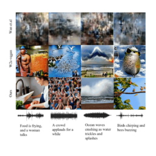

|
Taegyeong Lee Hi, I am Taegyeong Lee. I am interested in novel research that generates images or videos from audio or text (various modalities). Just as humans can think and infer from various senses, I believe that the various modalities and generative models can have a significant impact on our community in the future. I completed my Master's degree at the UNIST Graduate School of Artificial Intelligence, where I was advised by Professor Taehwan Kim. Previously, I interned at the Electronics and Telecommunications Research Institute (ETRI) and completed Software Maestro 8th program, sponsored by the Ministry of Science and ICT on Republic of Korea. I also served as a software developer soldier in the Promotion Data Management Division of the Republic of Korea Army Headquarters. I hold a Bachelor of Science degree in Computer Engineering from Pukyong National University. . |

|
Research
My current primary research interests include: |

|
Multi-aspect Knowledge Distillation with Large Language Model
Taegyeong Lee, Jinsik Bang, Soyeong Kwon, Taehwan Kim, arXiv, 2025 github / arXiv We introduce a multi-aspect knowledge distillation method using MLLMs to enhance vision models by learning both visual and abstract aspects, improving performance across tasks. |
|

|
Generating Realistic Images from In-the-wild Sounds
Taegyeong Lee, Jeonghun Kang, Hyeonyu Kim, Taehwan Kim, ICCV, 2023 github / arXiv We propose a diffusion-based model that generates images from wild sounds using audio captioning, attention mechanisms, and CLIP-based optimization, achieving superior results. |

|
Generating Emotional Face Images using Audio Information for Sensory Substitution
Taegyeong Lee, Hyerin Uhm, Chi Yoon Jeong, Chae-Kyu Kim, Journal of Korea Multimedia Society, 2023 We propose a method to generate images optimized for sound intensity, enhancing V2A models for improved face image generation. |
|
Feel free to steal this website's source code. Do not scrape the HTML from this page itself, as it includes analytics tags that you do not want on your own website — use the github code instead. Also, consider using Leonid Keselman's Jekyll fork of this page. |